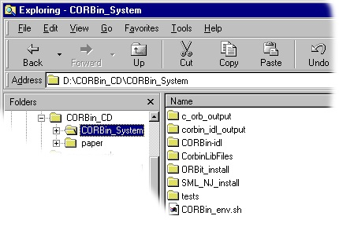

CORBin: The C ORB Interface System for the Standard ML of New Jersey Compiler
by: Brian S. Corbin
In a world where the networked computing environment is an integral part of an organization, technologies like the Common Object Request Broker Architecture (CORBA) are being widely used to develop distributed applications. Using CORBA, distributed components can be implemented in different programming languages and still interoperate using an Object Request Broker (ORB). Since an ORB is needed in order to utilize CORBA objects and implement CORBA objects, many programming languages go without CORBA support. The C ORB Interface System (CORBin) is an attempt to provide CORBA support to the functional language ML by using an exisiting ORB with C language bindings called ORBit. CORBin provides an IDL compiler (implemented in ML) and a library of C functions. The details of the C ORB Interface System are presented in my M.S. thesis. The thesis is available on http://www.corbinator.com. A copy is also available on this CD-ROM in the paper folder. (paper.ps)
You may be interested in the CORBin System if you're an ML programmer and wish to develop CORBA based applications. Even Non-ML programmers may wish to use the CORBin System if their problem domain requires functionality that is easily implemented in ML.
The C ORB Interface System provides a means by which to utilize existing CORBA objects from within an ML program. It also provides a means by which to implement CORBA objects in ML.
The CORBin System is consists of two components. It includes an IDL compiler, corbin-idl, which processes an Interface Definition Language file and generates some ML and C code to handle the marshalling and unmarshalling of parameters between CORBA objects. It also includes a library of C functions which provide the ability to use a CORBA Name Server via ORBit functionality. For a detailed description of the inner-workings of CORBin, please refer to my thesis.
The C ORB Interface System should still be considered to be a prototype. Although it has successfully been used to implement and communicate with CORBA objects, it has not been tested completely enough to be considered extremely robust. (Feel free to test/extend the functionality of the system!!!)
The directory structure

This CD-ROM makes an attempt to organize the CORBin System and it's required components into an intuitive directory structure. The CORBin-idl directory contains the source code for the CORBin IDL Compiler. ORBit_install contains the source code for the CORBA ORB called ORBit. SML_NJ_install contains the files that make up the SML/NJ distribution. The tests directory contains some example programs that make use of the C ORB Interface System. Refer to these programs to see how to make the System work for you. You may wish to refer back to this directory structure image as you go through the installation steps.
Building the IDL Compiler for your system
Installing the CORBA ORB called ORBit
Setting up Environment Variables
Once the C ORB Interface system has been configured and installed properly, you can begin writing CORBA based applications in ML. Specify your Object's advetised interface in OMG's Interface Definition Lanaguage. Then, simply run corbin-idl with the filename of your IDL specification as the command-line argument.
Example:
corbin-idl my_idl_file.idl
This will create several files in your current working directory as well as rebuilding the SML/NJ runtime system to include the functionality needed to implement and communicate with objects having the interface(s) contained within your IDL file.
Refer to the tests directory to see several examples that make use of the CORBin System. The SyrupManager illustrates the majority of the CORBin System facilities.
Make the CORBin System Better!!!
Also, a better installation procedure would be nice -- like an Automatic one!!!